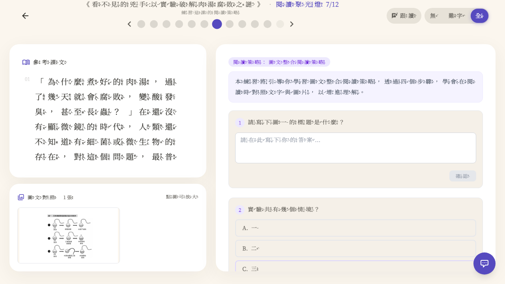

7 課 × 7/1 deadline
5/13 進度證明 · 5/1 拍板 → 7/1 上線
過去 12 天，2 個模組（閱讀聚光燈 AI 助教 + 圖文整合介面）與 7 篇精選課文，從 backend e2e ready 推進到 學生端可走完整 rescue 對話流程。
剩 49 天。本 pitch 證明三件事：該做的在做、不該做的有砍、教授一問就答得出來。
Young Tsai · lead dev · LingoLeap 朗朗上口
2026-05-13 · 給方大哥 + 教授團隊 + 林校長
SLIDE 02
5/1 教授會議拍板 — 三件事
方大哥 5/1 拍板：「不再追求功能完整，追求兩個模組做到極致」
1. 兩個核心模組
閱讀聚光燈 AI 助教（答錯時主動引導，5 步驟 SOP）
圖文整合介面（文圖左右並陳，可獨立滾動）
2. 七篇精選課文
單元 A · 4 課：G6-L22~25 摘要策略（問題 → 解決 → 結果）
單元 B · 3 課：G7-L28~30 圖文整合策略（7/1 必含）
3. 林校長許願
「閱讀聚光燈如果能變成語音交談，會是我最想許願的功能。」
第一版：文字對話 + 5 步驟引導（語音為下一階段）
隱藏次要功能 — 避免失焦
生字、造句、聽力 先關閉 | 字體改非黑體 | 注音僅標難字 | 生字練習部件拆解上色
SLIDE 03 · Working Backwards
假設 7/1 demo 成功 — 新聞稿會這樣寫
倒推法：先寫成功故事，再回推今天該做什麼
PRESS RELEASE · 想像版 · 2026-07-01
LingoLeap 朗朗上口正式上線：AI 閱讀家教為國中體育班量身打造
由方大哥 / 曾世杰教授 / 陳淑麗教授 / 林國源校長 / 大學生 + 高中生混編開發團隊歷時 18 個月共同打造的「LingoLeap 朗朗上口」數位閱讀平台，今日正式上線首版。
首批內容涵蓋陳淑麗教授團隊精選的 七篇課文兩個學習單元 — 含 G6 摘要策略與 G7 圖文整合策略 — 並搭載業界首見的「閱讀聚光燈 AI 助教」：學生答錯時，AI 化身「小語老師」以五步驟引導對話，取代直接給答案。
三民國中體育班預計暑期成為第一個試用班級。林國源校長：「孩子只需要稍微被帶一下，就有辦法自己學下去 — AI 替我們做了這件事。」
— 朗朗上口 press release v0.1 · drafted by Young 2026-05-13
教授會問的 FAQ — pitch 前先準備
- 七課真的能用嗎？ backend e2e ready，YAML fast path < 100ms（slide 4）
- 跟紙本比真的有提升嗎？ 暑假體育班試用 + 數據收集（6/15 後）
- AI 答錯時真的會引導嗎？ rescue dialog 已實裝，對應 5 步驟 SOP（slide 8）
- 學生會不會大腦外包？ 設計上不直接給答案 + 蘇格拉底式引導（slide 9）
- 剩 49 天還能做什麼 / 不該做什麼？ remaining work + 已知 risk（slide 10）
SLIDE 04 · 基建
七課 backend e2e ready · 5/2 完成
YAML fast path 60-80 倍快過 AI fallback（70-85ms vs 5000ms）
| 單元 |
課次 |
課文標題 |
HTTP |
YAML latency |
結構列數 |
| A · 摘要 | G6-L22 | 贏得喝采的輸家 | 200 | 84 ms | 9 |
| A · 摘要 | G6-L23 | — | 200 | 85 ms | 5 |
| A · 摘要 | G6-L24 | — | 200 | 83 ms | 4 |
| A · 摘要 | G6-L25 | — | 200 | 74 ms | 4 |
| B · 圖文 | G7-L28 | 看不見的兇手：以實驗破解肉湯腐敗之謎 | 200 | 85 ms | 6 |
| B · 圖文 | G7-L29 | 從四張圖，看地球暖化的現象 | 200 | 76 ms | 22 |
| B · 圖文 | G7-L30 | — | 200 | 70 ms | 25 |
PR #1391（schema regression 修）+ #1392（parser coverage 9.3% → 19.9%）+ #1395（pagination page_size cap 100→300）— 全 staging verified · 詳見 docs/qa-evidence-2026-05-02-7-lessons-readiness.md
▶ 立即體驗 · TRY IT NOW
7 課 staging URL · 點下去直接體驗
學生小明 demo 帳號自動帶入 · 每課直接跳到核心 demo 階段
⚙️ 登入步驟（30 秒）
① 點開下方任一連結 → 自動跳 /login
② 點「學生 小明」按鈕（不用打帳密）
③ 自動跳回原本連結 → 進入課文
📘 單元 A · G6 摘要策略（4 課）
🖼️ 單元 B · G7 圖文整合策略（3 課 · 7/1 必含）
⚡ 一次跑完整 12 步流程
推薦 demo 流程：開 G7-L28 從頭走 → 12 步全跑（簡介 → 讀全文 → 朗讀 → 詞語 → 閱讀聚光燈 → 文章重點 → ...）
▶ 從 G7-L28 第 1 步開始走
Staging base URL: https://lingoleap-frontend-staging-958347263320.asia-east1.run.app
生產環境（7/1 上線後）會更新到 lingoleap-frontend 主 URL · staging 與生產 schema 同步
SLIDE 05 · 單元 A · 摘要策略
G6-L22 贏得喝采的輸家 — 文章重點表
問題.解決.結果 結構式摘要 · 5/13 staging 截圖

staging · /learn/1076/story-structure · 1440×900 · 學生小明 demo 帳號
左欄：課文「贏得喝采的輸家」全注音（注音可切換無/難字/全）
右欄頭：黃色橫向 banner「主題」「範例 1/2/3」
改自原黃 w-20 直排（中文長標題會擠成單字 — PR #1535 修正）
灰色 sub banner「主角」「特質」 — 結構層次清楚
互動：fill_blank input + AI 即時批改（每個 row 提交時打分）
📚 摘要策略結構（學習單對應）
主題 → 問題 → 解決方法 → 結果 → 反思
陳教授指定的策略結構，9 個欄位對應到「問題.解決.結果」框架；學生填空後 AI 批改 + 提示。
SLIDE 06 · 單元 B · 圖文整合
G7-L29 從四張圖看地球暖化 — 文圖左右並陳
校長 5/1 許願：「紙本來回翻頁痛點，數位版該解掉」

staging · /learn/1109/comprehension · 4 張地球暖化圖 + 課文 + 題目
左欄上層：課文（近年來，很多人都注意到天氣愈來愈古怪...）
左欄下層：圖文 strip「圖文整合 4 張」
點圖開 fullscreen modal + focus-trap + Esc 關閉
右欄 col-span-7：題目「共 5 題」+ 選擇題 ABCD
紙本痛點：學生要在頁面間翻來翻去 / 數位版：所有資訊同畫面
專家洞察（簡教授吳大猷獎研究）：低成就學生「完全不看圖」 — 教 25 分鐘策略後眼動率與閱讀理解都顯著提升
實作：PR #1531 三欄擁擠 → 左疊圖文+右題目 / PR #1539 抽 GraphicTextImageStrip 共用元件 — 維護 1 處不用維護 2 處
SLIDE 07 · 閱讀聚光燈
閱讀聚光燈 — G7-L28 肉湯腐敗之謎
課文 + 圖文 + 題目 + AI 助教引導訊息 一站式介面

staging · /learn/1108/reading-strategy · 學生小明 demo
頂部紫色提示框：「本題將引導你學習圖文整合閱讀策略，透過 4 個步驟」 — AI 助教課前 priming
第 1 題：fill_blank「請寫下唯一的線索是什麼？」+ 思考輸入框
第 2 題：選擇題「實驗共有幾個過程呢？」ABCD
步驟一覽（StepperNav）：12 步學習流程，閱讀聚光燈為第 7 步
SLIDE 08 · 校長許願實現
小語老師 — 答錯主動引導，對齊林校長 5 步驟 SOP
「AI 化身閱讀理解贏家」— 林校長 5/1 最想許願的功能

① 答錯 → ✗ marked + 正答 ✓ revealed + 橙色 banner「問 AI 助教」

② 點開 → 小語老師對話框 + 4 個 quick reply + 500 字輸入框
林校長 5 步驟 SOP 對應度
| 校長 SOP（答錯時老師會做的事） |
小語老師對應實作 |
狀態 |
| 1. 邀請學生說對題目的理解 | 「先告訴我，你覺得這道題在問什麼？」(AI 開場句) | ✅ 已實裝 |
| 2. 邀請回到課文找對應段落 | "再說一次" quick reply 觸發 → AI 引導學生回查 | ✅ 已實裝 |
| 3. 邀請用自己的話復述 | 500 字 free-form input + AI 評估理解度 | ✅ 已實裝 |
| 4. 拉回題目問選項判斷 | "可以提示我嗎" → AI 給選項對比 hint 不給答案 | ✅ 已實裝 |
| 5. 都失敗才直接教學 | 3 次失敗後解鎖正解（McqAttempt DB 紀錄次數） | 🟡 邏輯實裝，prompt 待教授校正 |
實作：PR #1547（啟翔 主刀）· 新 DB table McqAttempt 紀錄每次答錯 + AI 對話 · POST /api/learning/mcq-rescue/start → 200 verified
SLIDE 09 · 教學品質防線
不讓學生把大腦外包給 AI
引簡立峰：「學校教 AI 會的，企業要 AI 不會但你要懂的」
🚫 我們刻意不做
- 不把「給我答案」當預設按鈕
- 不讓 AI 一答就秀解析
- 不無限次重答（McqAttempt 計次）
- 不讓學生跳過引導直接看答案
✅ 我們強制學生先動腦
- AI 開場 反問：「你覺得這題在問什麼？」
- 提供 提示而非答案（"可以提示我嗎" quick reply）
- 500 字輸入框強制學生用自己的話復述
- 第 3 次答錯才 reveal 正解（DB 計次）
「別把大腦外包給 AI。永遠先自己想 10 分鐘，再問 AI。」
— 簡立峰博士，前 Google 台灣總經理
「[Khanmigo] doesn't give the answer. It tries to engage with the student in a Socratic way.」
— Sal Khan, Khan Academy 創辦人 · 2026 Chalkbeat 訪談
Khan Academy 過去 3 年的教訓：學生反饋「AI 引導太煩，跳過去用 ChatGPT 直接拿答案」。
我們的設計把這條 escape hatch 鎖死 — 在 LingoLeap 內，學生想拿答案得先動腦三次。
SLIDE 10 · Inversion · 還剩什麼
5/13 → 6/1 → 7/1 · 剩餘 49 天
「想知道我們會死在哪，這樣就永遠不要去那裡。」— Charlie Munger
5/13 完成 75% · 剩 49 天衝 100%
5/13（今天）
75% 完成
7 課 backend ✅
圖文左右並陳 ✅
AI 助教文字 rescue ✅
5 步驟 SOP 4/5 實裝 ✅
6/1 教授 review
必達 90%
5 步驟 prompt 教授校正
OMO Cold Start v1
教師後台 MVP（4 P1 sub-tickets）
AI 助教 prompt 跟 7 課對齊
7/1 launch
必達 100%
AI 助教**語音**互動
體育班試用 onboarding
家長 / 教師 dashboard
紙本 + 數位 OMO 串接
已知 risk（不報好的、誠實談）
- AI 助教語音互動（#1340）5/9 起接手，目前文字版可用 — 7/1 前是否到語音是最大不確定
- 5 步驟 prompt 教學品質需教授團隊校正 — 不是 code 工程而是教學設計工程
- OMO Cold Start（#1343）紙本拍照辨識 — 還沒開工，可能順延 8 月
- 體育班暑期試用需要學校行政配合（暑假上課時段、學生意願）
- codex review 留 4 P1 hygiene issues（image error / lesson_code / silent fail / strokeRenderer）— pitch 前修
SLIDE 11 · 誠實談限制
AI 助教不替代老師 — 三個我們學到的事
引 Sal Khan 2026：「revolution hasn't happened」
1. AI 不替代老師
Khan Academy 過去 3 年最大教訓：「for a lot of students, it was a non-event」
AI 助教解的是「學生答錯時 0 → 1 的引導」，不是替代老師 1 → 100 的個別關懷。
2. 體育班需要老師 1on1
林校長 5/1 提到：體育班學生「意志力較弱」，需真實書寫 + 老師在旁督促。
LingoLeap 的角色：補足老師沒空 1on1 時的引導，不是把老師趕走。
3. 內隱知識教不了
簡立峰：「學校教 AI 會的，企業要 AI 不會但你要懂的（內隱知識）」
我們做的是「策略外顯化」 — 把摘要、圖文整合的方法步驟教會。內隱判斷力還是要老師在旁。
「I do not believe AI should become a substitute for person-to-person interaction.」
— Sal Khan, Brave New Words · 2024
我們的 thesis：紙本 + 老師 + AI 三者共生，不是 AI 取代誰。
暑假體育班試用會驗證這個 thesis — 數據會說話。
SLIDE 12 · 6/1 review · ask
6/1 教授 review · 我們需要三件事
教授團隊 + 校長 + 方大哥 · 各位的角色
陳教授 / 曾教授
1. 5 步驟 SOP prompt 校正（小語老師講話像不像老師）
2. 7 課內容核對（rows 對不對學習單）
3. 體育班試用設計建議
林校長
1. 體育班試用學校端配合（暑假時段、學生名單）
2. 試用後家長端反饋管道
3. 對「AI + 老師」分工的 framework 校正
方大哥
1. OMO 紙本拍照辨識 優先級確認
2. 教師後台 MVP 7/1 前要做到哪一版？
3. 體育班試用後 → 8 校 100 人擴散時程
「打群架，讓辛苦發展的東西看到成效。」
— 曾世杰教授
「紙本與數位平台不是競爭關係，而是合作關係。」
— 方大哥
「孩子只需要稍微被帶一下，就有辦法自己學下去。」
— 陳淑麗教授
「閱讀聚光燈如果能變成語音交談，會是我最想許願的功能。」
— 林國源校長
朗朗上口 · LingoLeap · 7 課 7/1 pitch · 2026-05-13
Young Tsai · lead dev · repo